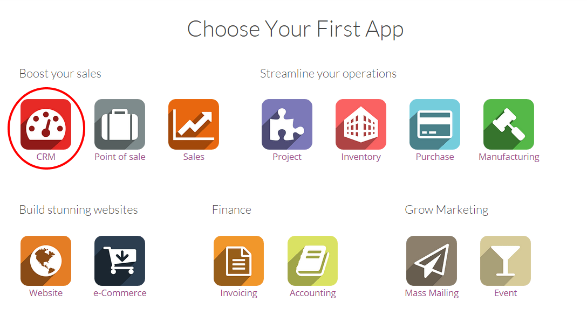
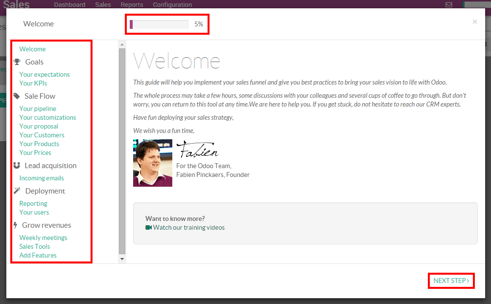

This quick step-by-step guide will lead you through Odoo CRM and help you handle your sales funnel easily and constantly manage your sales funnel from lead to customer.
Configuration
Create your database from www.odoo.com/start, select the CRM icon as first app to install, fill in the form and click on Create now. You will automatically be directed to the module when the database is ready.
Tip
You will notice that the installation of the CRM module has created the submodules Chat, Calendar and Contacts. They are mandatory so that every feature of the app is running smoothly.
Introduction to the Sales Planner
The Sales Planner is a useful step-by-step guide created to help you implement your sales funnel and define your sales objectives easier. We strongly recommend you to go through every step of the tool the first time you use Odoo CRM and to follow the requirements. Your input are strictly personal and intended as a personal guide and mentor into your work. As it does not interact with the backend, you are free to adapt any detail whenever you feel it is needed.
You can reach the Sales Planner from anywhere within the CRM module by clicking on the progress bar located on the upper-right side of your screen. It will show you how far you are in the use of the Sales Planner.
Set up your first sales team
Create a new team
A Direct Sales team is created by default on your instance. You can either use it or create a new one. Refer to the page How to create a new team? for more information.
Assign salespeople to your sales team
When your sales teams are created, the next step is to link your salespeople to their team so they will be able to work on the opportunities they are supposed to receive. For example, if within your company Tim is selling products and John is selling maintenance contracts, they will be assigned to different teams and will only receive opportunities that make sense to them.
In Odoo CRM, you can create a new user on the fly and assign it directly to a sales team. From the Dashboard, click on the button More of your selected sales team, then on Settings. Then, under the Assignation section, click on Create to add a new salesperson to the team.
From the Create: salesman pop up window (see screenshot below), you can assign someone on your team:
- Either your salesperson already exists in the system and you will just need to click on it from the drop-down list and it will be assigned to the team
- Or you want to assign a new salesperson that doesn't exist into the system yet - you can do it by creating a new user on the fly from the sales team. Just enter the name of your new salesperson and click on Create (see below) to create a new user into the system and directly assign it to your team. The new user will receive an invite email to set his password and log into the system. Refer to How to create a new salesperson? for more information about that process
Set up your pipeline
Now that your sales team is created and your salespeople are linked to it, you will need to set up your pipeline -create the process by which your team will generate, qualify and close opportunities through your sales cycle. Refer to the document Set up and organize your sales pipeline to define the stages of your pipeline.
Set up incoming email to generate opportunities
In Odoo CRM, one way to generate opportunities into your sales team is to create a generic email address as a trigger. For example, if the personal email address of your Direct team is direct@mycompany.example.com, every email sent will automatically create a new opportunity into the sales team.
Refer to the page How to generate leads from incoming emails? to set it up.
Automate lead assignation
If your company generates a high volume of leads every day, it could be useful to automate the assignation so the system will distribute all your opportunities automatically to the right department.
Refer to the document Automate lead assignation to specific sales teams or salespeople for more information.